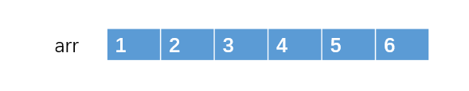
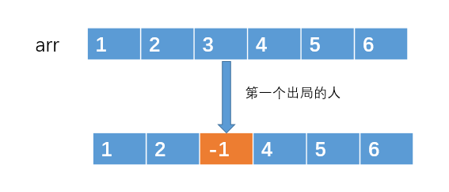
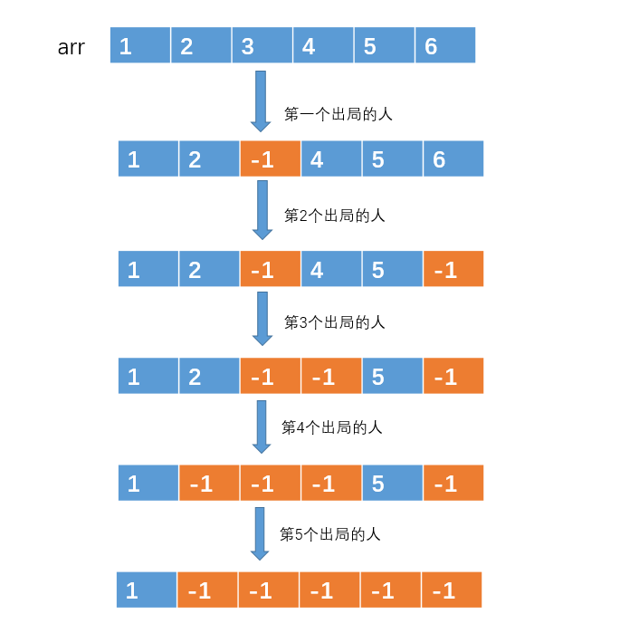
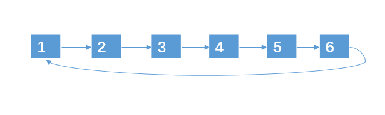
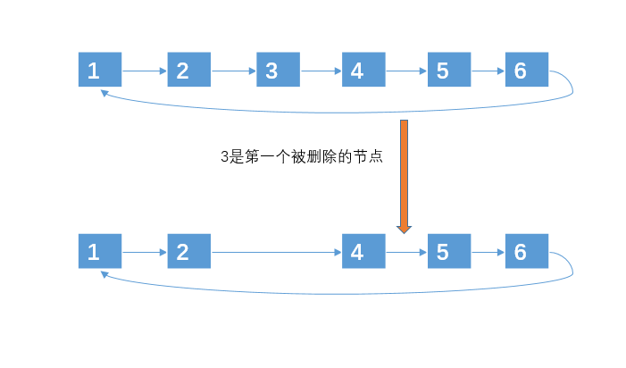

问题描述：编号为 1-N 的 N 个士兵围坐在一起形成一个圆圈，从编号为 1 的士兵开始依次报数（1，2，3…这样依次报），数到 m 的 士兵会被杀死出列，之后的士兵再从 1 开始报数。直到最后剩下一士兵，求这个士兵的编号。
1、方法一：数组
在大一第一次遇到这个题的时候，我是用数组做的，我猜绝大多数人也都知道怎么做。方法是这样的：
用一个数组来存放 1，2，3 … n 这 n 个编号，如图（这里我们假设n = 6, m = 3）

然后不停着遍历数组，对于被选中的编号，我们就做一个标记，例如编号 arr[2] = 3 被选中了，那么我们可以做一个标记，例如让 arr[2] = -1，来表示 arr[2] 存放的编号已经出局的了。

然后就按照这种方法，不停着遍历数组，不停着做标记，直到数组中只有一个元素是非 -1 的，这样，剩下的那个元素就是我们要找的元素了。

这种方法简单吗？思路简单，但是编码却没那么简单，临界条件特别多，每次遍历到数组最后一个元素的时候，还得重新设置下标为 0，并且遍历的时候还得判断该元素时候是否是 -1。感兴趣的可以动手写一下代码，用这种数组的方式做，千万不要觉得很简单，编码这个过程还是挺考验人的。
这种做法的时间复杂度是 O(n * m), 空间复杂度是 O(n);
2、方法二：环形链表
学过链表的人，估计都会用链表来处理约瑟夫环问题，用链表来处理其实和上面处理的思路差不多，只是用链表来处理的时候，对于被选中的编号，不再是做标记，而是直接移除，因为从链表移除一个元素的时间复杂度很低，为 O(1)。当然，上面数组的方法你也可以采用移除的方式，不过数组移除的时间复杂度为 O(n)。所以采用链表的解决方法如下：
1、先创建一个环形链表来存放元素：

2、然后一边遍历链表一遍删除，直到链表只剩下一个节点

代码如下：
1
2
3
4
5
6
7
8
9
|
class Node{
int date;
Node next;
public Node(int date) {
this.date = date;
}
}
|
核心代码
1
2
3
4
5
6
7
8
9
10
11
12
13
14
15
16
17
18
19
20
21
22
23
24
25
26
27
28
29
30
31
32
33
34
35
36
| public static int solve(int n, int m) {
if(m == 1 || n < 2)
return n;
Node head = createLinkedList(n);
int count = 1;
Node cur = head;
Node pre = null;
while (head.next != head) {
if (count == m) {
count = 1;
pre.next = cur.next;
cur = pre.next;
} else {
count++;
pre = cur;
cur = cur.next;
}
}
return head.date;
}
static Node createLinkedList(int n) {
Node head = new Node(1);
Node next = head;
for (int i = 2; i <= n; i++) {
Node tmp = new Node(i);
next.next = tmp;
next = next.next;
}
next.next = head;
return head;
}
|
这种方法估计是最多人用的，时间复杂度为 O(n * m),空间复杂度是 O(n)。
3、方法三：递归
其实这道题还可以用递归来解决，递归是思路是每次我们删除了某一个士兵之后，我们就对这些士兵重新编号，然后我们的难点就是找出删除前和删除后士兵编号的映射关系。
我们定义递归函数 f(n，m) 的返回结果是存活士兵的编号，显然当 n = 1 时，f(n, m) = 1。假如我们能够找出 f(n，m) 和 f(n-1，m) 之间的关系的话，我们就可以用递归的方式来解决了。我们假设人员数为 n, 报数到 m 的人就自杀。则刚开始的编号为
…
1
…
m - 2
m - 1
m
m + 1
m + 2
…
n
…
进行了一次删除之后，删除了编号为 m 的节点。删除之后，就只剩下 n - 1 个节点了，删除前和删除之后的编号转换关系为：
删除前 — 删除后
… — …
m - 2 — n - 2
m - 1 — n - 1
m —- 无(因为编号被删除了)
m + 1 — 1(因为下次就从这里报数了)
m + 2 —- 2
… —- …
新的环中只有 n - 1 个节点。且删除前编号为 m + 1, m + 2, m + 3 的节点成了删除后编号为 1， 2， 3 的节点。
假设 old 为删除之前的节点编号， new 为删除了一个节点之后的编号，则 old 与 new 之间的关系为 old = (new + m - 1) % n + 1。
这样，我们就得出 f(n, m) 与 f(n - 1, m)之间的关系了，而 f(1, m) = 1.所以我们可以采用递归的方式来做。代码如下：
注：有些人可能会疑惑为什么不是 old = (new + m ) % n 呢？主要是因为编号是从 1 开始的，而不是从 0 开始的。如果 new + m == n的话，会导致最后的计算结果为 old = 0。所以 old = (new + m - 1) % n + 1.
1
2
3
4
| int f(int n, int m){
if(n == 1) return n;
return (f(n - 1, m) + m - 1) % n + 1;
}
|
两行代码搞定，而且时间复杂度是 O(n)，空间复杂度是O(1)，牛逼！那如果你想跟别人说，我想一行代码解决约瑟夫问题呢？答是没问题的，如下:
1
2
3
| int f(int n, int m){
return n == 1 ? n : (f(n - 1, m) + m - 1) % n + 1;
}
|
另一版本约瑟夫
1
2
3
4
5
6
7
8
9
10
11
12
13
14
15
16
17
18
19
20
21
22
23
24
25
26
27
28
29
30
31
32
33
34
35
36
37
38
39
40
41
42
43
44
45
46
47
48
49
50
51
52
53
54
55
56
57
58
59
60
61
62
63
64
65
66
67
68
69
70
71
72
73
74
75
76
77
78
79
80
81
82
83
84
85
86
87
88
89
90
91
92
93
94
95
96
97
98
99
100
101
102
103
104
105
106
107
108
109
110
111
112
113
114
115
116
117
118
119
120
121
122
123
124
125
126
127
128
129
130
131
132
133
134
135
136
137
138
| public class Josephu {
public static void main(String[] args) {
CircleSingleLinkedList circleSingleLinkedList = new CircleSingleLinkedList();
circleSingleLinkedList.addBoy(5);
circleSingleLinkedList.showBoy();
circleSingleLinkedList.countBoy(1, 2, 5);
}
}
class CircleSingleLinkedList {
private Boy first = new Boy(-1);
public void addBoy(int nums) {
if (nums < 1) {
System.out.println("nums的值不正确".
}
Boy curBoy = null;
for (int i = 1; i <= nums; i++) {
Boy boy = new Boy(i);
if (i == 1) {
first = boy;
first.setNext(first);
curBoy = first;
} else {
curBoy.setNext(boy);
boy.setNext(first);
curBoy = boy;
}
}
}
public void showBoy() {
if (first == null) {
System.out.println("没有任何小孩~~");
return;
}
Boy curBoy = first;
while (true) {
System.out.printf("小孩的编号 %d \n", curBoy.getNo());
if (curBoy.getNext() == first) {
break;
}
curBoy = curBoy.getNext();
}
}
public void countBoy(int startNo, int countNum, int nums) {
if (first == null || startNo < 1 || startNo > nums) {
System.out.println("参数输入有误， 请重新输入");
return;
}
Boy helper = first;
while (true) {
if (helper.getNext() == first) {
break;
}
helper = helper.getNext();
}
for (int i = 0; i < startNo - 1; i++) {
first = first.getNext();
helper = helper.getNext();
}
while (true) {
if (helper == first) {
break;
}
for (int j = 0; j < countNum - 1; j++) {
first = first.getNext();
helper = helper.getNext();
}
System.out.printf("小孩%d出圈\n", first.getNo());
first = first.getNext();
helper.setNext(first);
}
System.out.printf("最后留在圈中的小孩编号%d \n", first.getNo());
}
}
class Boy {
private int no;
private Boy next;
public Boy(int no) {
this.no = no;
}
public int getNo() {
return no;
}
public void setNo(int no) {
this.no = no;
}
public Boy getNext() {
return next;
}
public void setNext(Boy next) {
this.next = next;
}
}
|